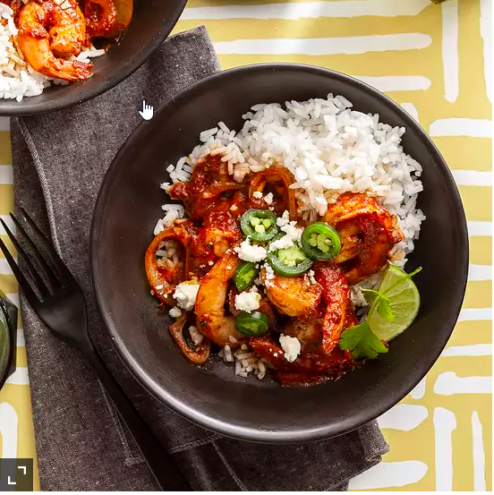

Camarones ala Diabla

Description
Camarones, spice, and rice are the stars of the show in this Mexican-inspired dish. Serve over hot cooked
rice and garnish with orange wedges, Cotija cheese, and/or chopped fresh cilantro.
allrecipes.com
Ingredients
Sauce:
- 1 tablespoon vegetable oil
- ¾ cup sliced white onion
- 3 cloves garlic, minced
- 6 dried guajillo chiles - stems removed, seeded, and cut into large pieces
- 2 dried ancho chile peppers - stems removed, seeded, and cut into large pieces
- 2 large tomatoes, cut into chunks
- 1 ½ cups water
- ½ cup orange juice
- 1 tablespoon chicken bouillon granules
Shrimp:
- 2 pounds raw shrimp (31-35 count), peeled and deveined
- ½ teaspoon salt
- ½ teaspoon ground black pepper
- 1 teaspoon olive oil
- 1 tablespoon butter
- ¾ cup sliced white onion
- 2 cloves garlic, minced
Directions
- Heat oil in a large skillet over low heat. Add onion and garlic; cook until onion is tender, about 5
minutes.
- Add dried chiles; cook, stirring constantly, until fragrant, 2 to 3 minutes.
- Add tomatoes; cook until slightly softened, about 3 minutes.
- Stir in water and bring to a boil.
- Reduce heat and simmer until peppers are softened, about 10 minutes.
- Reduce heat and simmer until peppers are softened, about 10 minutes.
- Blend chile mixture, orange juice, and bouillon in a blender until smooth.
- Strain through a sieve set over a bowl; discard solids.
- Sprinkle shrimp with salt and black pepper.
- Rinse and dry the skillet.
- Heat butter and oil in skillet over medium heat.
- Add onion and garlic; cook, stirring, until tender, about 5 minutes.
- Add shrimp; cook just until browned on both sides, about 3 minutes.
- Transfer shrimp to a bowl.
- Add sauce to the skillet; simmer over medium heat until slightly thickened, 2 to 3 minutes.
- Add shrimp; simmer until cooked through, about 5 minutes.